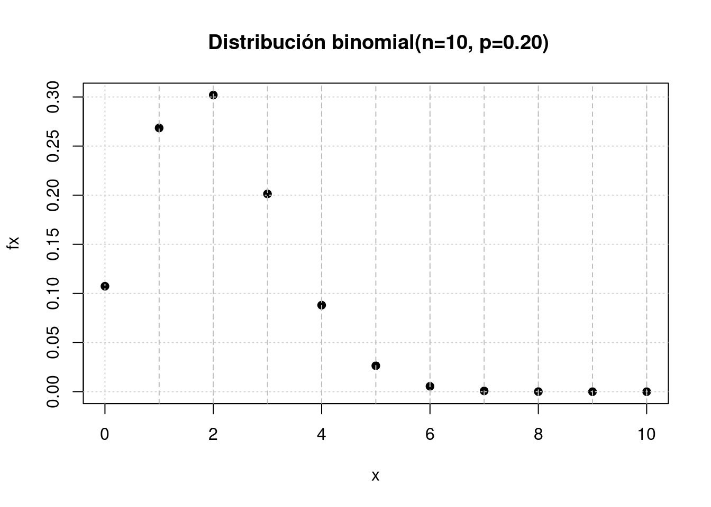

1 Con base en las pruebas extensas, el fabricante de una lavadora determinó que el tiempo \(Y\) (en años) para que el electrodoméstico requiera una reparación mayor se obtiene mediante la siguiente función de densidad de probabilidad :
\[f_{_{Y}}(y) = \left \{ \begin{matrix} \dfrac{1}{4} exp\{-y/4\} & \mbox{ , } y \geq 0\\ 0 & \mbox{en otro caso } \end{matrix}\right. \]
2 Sea el número de llamadas telefónicas que recibe un conmutador durante un intervalo de 5 minutos una variable aleatoria \(X\) con la siguiente función de distribución de probabilidad:
\[f(x)= \dfrac{exp\{-2\}\hspace{.2cm} 2^x}{x!}\hspace{.3cm} \mbox{ , para }\hspace{.3cm} x = 01,2,3,4,5.... \]
3 El congestionamiento de pasajeros es un problema de servicio en los aeropuertos, en los cuales se instalan trenes para reducir la congestión. cuando se usa el tren el tiempo \(X\), en minutos, que toma viajar desde la terminal principal hasta una explanada específica tiene la siguiente función de densidad:
\[f_{_{X}}(x) = \left \{ \begin{matrix} \dfrac{1}{10} & \mbox{ , } 0 \leq y \leq 10\\ 0 & \mbox{en otro caso } \end{matrix}\right. \]
Problemas tomado de walpole (2006)
4. Suponga que \(f(x)=exp\{-x\}\), para \(0 \leq x \leq 1\), \(0\) para cualquier otro caso.
Determine :
5. Para una variable aleatoria con función de densidad : \(f(x)= x/8\) para \(3 < X < 5\).
Determine :
6. El tiempo de reparación (en minutos) de una máquina fotocopiadora tiene una función de densidad:
\[f_{_{X}}(x) = \left \{ \begin{matrix} \dfrac{1}{22} exp\{-x/22\} & \mbox{ , } x > 0\\ 0 & \mbox{en otro caso } \end{matrix}\right. \]
Cuando el profesor de Probabilidad y Estadística se preparaba para imprimir el cuestionario del segundo examen parcial, fue enterado por la secretaria del departamento que la máquina fotocopiadora se había averiado y que el técnico había acabado de llegar en ese instante y empezado a repararla. El profesor debe contar con por lo menos 10 minutos extras - tiempo de fotocopiado de 35 exámenes, organizar sus respectivas hojas de respuestas, sumado tiempo de su desplazamiento hasta el salón de clase, arreglo de las mesas y entrega de los cuestionarios a los estudiantes. Al mirar el reloj, el profesor observa que faltan 20 minutos para la hora en que debe empezar el examen y decide esperar a que el técnico repare la fotocopiadora. ¿Es acertada o no la decisión que tomó el profesor? Justifique su respuesta.
7. Suponga que \(f(x)=exp\{-x\}\), para \(0 \leq x \leq 1\), \(0\) para cualquier otro caso.
Determine :
8. Para una variable aleatoria con función de densidad : \(f(x)= x/8\) para \(3 < X < 5\).
Determine :
9. Una de las preocupaciones que tienen los padres hoy en dia está relacionada con el tiempo que pasan sus hijos usando celular. Un estudio determinó que el número de llamadas que un joven realiza durante un dia es una variable aleatoria (\(X\)) con función de distribución :
\[f_{_{X}}(x) = \left \{ \begin{matrix} \dfrac{8^{x}\hspace{.2cm} exp\{-8\}}{x!} & \mbox{ , para } \hspace{.3cm} x = 0,1,2,3,4,5,.....\\ 0 & \mbox{en otro caso } \end{matrix}\right. \]
El estudio afirma también que los jóvenes en promedio reciben al rededor de 12 llamadas por día, valor que es considerado muy alto, debido a que a esa edad por lo regular no se tienen actividades económicas que lo ameriten. También mencionan que debido a que se ha logrado identificar la función de distribución de probabilidad es fácil establecer que se trata de una variable con un comportamiento homogéneo. ¿Está de acuerdo con la información suministrada en el artículo? . Justifique su respuesta.
10. Modelo binomial Para una variable aleatoria con distribución binomial \(X sim binom(x, n=10, p=0.2)\) Determine:
\[P(X=5) = \displaystyle\binom{10}{5} 0.2^{5} (1-0.2)^{10-5}\]
# dbinom(x, # valor de x
# size, # tamaño
# prob) # probabilidad de exito
dbinom(5,10,0.2)[1] 0.02642412\[P(X\leq 2) = \sum_{x=0}^{2}\displaystyle\binom{10}{x} 0.2^{x} (1-0.2)^{10-x} =f(0)+f(1)+f(2)\]
pbinom(2,10,0.2)[1] 0.6777995\[P(3 \leq X < 5) = F(4) - F(2) = f(3) + f(4)\]
pbinom(4,10,0.2)-pbinom(2,10,0.2)[1] 0.289407\[P(X \geq 8) = f(8) + f(9) + f(10) = 1 - F(1)\]
pbinom(7,10,0.2, lower.tail = FALSE)[1] 7.79264e-05x=0:10
fx=dbinom(x,10,0.2)
plot(x,fx,
main = " Distribución binomial(n=10, p=0.20)",
pch=19)
grid()
abline(v = 1:10, lty = 2, col = "grey")
11. Modelo Poisson Suponga que \(X\) tiene una distribución Poisson con media \(lambda=4\) (\(X \sim pois(x,lambda=4)\)). Determine:
# dpois(x, # valor de x
# lambda) # media o lambda
dpois(0,4)[1] 0.01831564\(P(X = 4)\)
\(P(X \geq 2)\)
\(P(X \leq 2)\)
Construya la gráfica de \(f(x)\)
12. Modelo binomial En un cargamento grande de llantas para automóviles, el 5 tiene imperfecciones. Se eligen de manera aleatoria 4 llantas para ser instalada en un automóvil. (Sea X el número de llantas con imperfecciones. \(X \sim binom(n=4, p=0.05\) )
¿ Cuál es la probabilidad de que ninguna de las llantas tenga imperfecciones?
¿ Cuál es la probabilidad de que sólo una de las llantas tenga imperfecciones?
¿ Cuál es la probabilidad de una o más llantas tenga imperfecciones?
13. Modelo Poisson Los clientes llegan al mostrador de una tienda de acuerdo con una variable aleatoria Poisson con una frecuencia promedio de ocho clientes por hora.
Calcule la probabilidad de que entre las 8 AM y las 9 AM lleguen exactamente cinco clientes.
Calcule la probabilidad de que entre las 2:30 PM y las 3:30 PM no lleguen más de tres clientes.
Calcule la probabilidad de que lleguen exactamente dos clientes dentro de un intervalo de dos horas continuas, por ejemplo entre 10 AM y 12 M.
Calcule el valor esperado del número de personas que llegan a la tienda entre las 2 PM y las 4:30 PM.
8. Se está desarrollando una nueva variedad de maíz en una extensión de experimentación agrícola. Se espera que tenga una tasa de germinación del 90. Para verificar esto, se plantan 20 semillas en suelos de idéntica composición y se les dedican los mismos cuidados. Si la cifra 90 es correcta, ¿cuántas semillas se espera que germinen? Si sólo germinan 15 o menos, ¿hay razón para sospechar de la cifra 90?
14. Un examen de Probabilidad consta de 100 preguntas de selección múltiple, cada una con cuatro opciones de respuesta. Maria responde cada pregunta al azar y sus respuestas son independientes
Si para aprobar el examen Maria debe responder mínimo 60 preguntas correctamente, calcule la probabilidad de que Maria apruebe el examen.
Calcule la probabilidad de que Maria deba responder 10 preguntas hasta responder la primera pregunta correctamente.
¿Cuál es el número esperado de preguntas que Maria responderá erróneamente hasta responder 5 preguntas correctamente?
15. Se sospecha que muchas muestras de agua, todas del mismo tamaño y tomadas del Hillbank River, han sido contaminadas por operarios irresponsables de una planta de tratamiento de aguas. Se contó el número de microorganismos conformes en cada muestra. El número medio de microorganismos por muestra fue de 15. Suponiendo que el número de microorganismos se distribuye según una distribución de Poisson, calcular la probabilidad de que:
La siguiente muestra contenga al menos 17 microorganismos.
La siguiente muestra contenga 18 o menos microorganismos.
La siguiente muestra contenga exactamente dos microorganismos.
16. Una aéreolinea nacional tiene aviones de 100 asientos para el servicio de transporte nacional. Se estima que la probabilidad de que una persona llegue al vuelo es de 0.90, debido a lo cual la aereolinea vende 105 tiquetes con el fin de minimizar la partida de aviones con sillas vacias. ¿cuál es la probabilidad de que todas las personas que lleguen para abordar el avión tengan asiento?
17 El número de grietas en un pavimento se estima en una grieta por cada 100m en promedio. Se desea estimar la probabilidad de:
Haya exactamente 8 grietas en una longitud de 500 m
No se presente ninguna grieta en 100 m
Se presenten menos de 2 grietas en 500 m
18. Un sistema de seguridad para casas está diseñado para tener una confiabilidad del 95 . Suponga que 10 casas equipadas con este dispositivo sufrieron tentativa de robo. Se requiere calcular la probabilidad de que en siete de las nueve, la alarma se activará.
19. Modelo uniforme Para una variable aleatoria \(X\sim unif(x,a,b)\) con \(a=10\) y \(b=20\) determine:
Construya un bosquejo de la gráfica de la función de densidad de probabilidad \(f_{_{X}}(x)\).
\(P(X \leq 12)\).
\(P(13\leq X <15)\).
\(P(X\geq 18)\) .
\(E[X]\) y \(V[X]\).
2. Modelo normal Para una variable \(Z\sim N(0,1)\), determine el área:
pnorm(-0.85, lower.tail = FALSE)[1] 0.80233751-pnorm(-0.85)[1] 0.8023375b.Entre \(z = 0.40\) y \(z = 1.30\).
Entre \(z = -0.30\) y \(z = 0.90\).
Desde \(z = -1.50\) hasta \(z = -0.45\).
Nota: en cada caso realice un bosquejo del área que representa la probabilidad
20. Modelo normal estandar Para una variable \(Z\sim N(0,1)\), determine el área:
A la izquierda de \(z = 0.56\).
Entre \(z = - 2.93\) y \(z = -2.06\).
Entre \(z = -1.08\) y \(z = 0.70\).
Desde \(z = 0.96\) hasta \(z = 1.62\).
Nota: En cada caso represente gráficamente los valores solicitados
21. Modelo normal Para una variable aleatoria continua \(X\sim norm(\mu=150, \sigma^{2}=1000)\) determine:
Realice un bosquejo de la gráfica de la función de densidad de probabilidad de \(X\)
\(P(X \leq 130)\).
pnorm(130, 150, 10)[1] 0.02275013\(P(300 \leq X \leq 400)\).
\(P(X\geq 550)\).
Determine el valor de \(k\) que cumpla : \(P(-k < X < k)= 0.90\).
Determine el valor de \(k\) que cumpla : \(P(-k < X < k)= 0.95\).
22. Modelo exponencial Sea \(X\) una variable aleatoria con distribución exponencial . (\(X\sim exp(\lambda=2)\)). Determine:
pexp(1,2)[1] 0.8646647\(P(X \geq 2)\).
\(P(1 < X < 2)\).
Realice un bosquejo de la gráfica de \(f_{_{X}}(x)\)
23. Doris y Mauricio quedan en encontrarse entre las 5:00 pm y 6:00 pm en Unicentro. Sea \(X\) el tiempo que transcurre entre las 5:00 pm y el momento en que llega Doris y \(Y\) el tiempo que transcurre entre las 5:00 pm y el momento en que llega Mauricio. Suponga que X y Y son variables aleatorias independientes uniformemente distribuidas en el intervalo [0; 60] en minutos.
Cuál es la distribución de probabilidad conjunta de X y Y?
¿Cuál es la probabilidad de que ambos lleguen entre las 5:30 y 5:40?
Sea T = X − Y el tiempo que Mauricio espera a Doris. ¿Cuánto debe esperar en promedio Mauricio a Doris?
Si Doris y Mauricio acuerdan además, que cada uno esperará al otro un máximo 10 minutos. Cuál es la probabilidad de que Mauricio y Doris se encuentren?
24. Para una variable aleatoria \(Y\) que representa las puntuaciones obtenidas en una prueba y cuya distribución es aproximadamente normal con media de \(480\) puntos y desviación estándar de \(90\) puntos, determine:
¿Cuál es la proporción de puntuaciones mayores a 700?
¿Cuál es el 25o. percentil de las puntuaciones?
Si la puntuación de alguien es de 600, ¿en qué percentil se encuentra?
¿Qué proporción de las puntuaciones se encuentra entre 420 y 520?
25 Suponga que la estatura de las personas en una población sigue la curva normal con media de 64.3 pulgadas y desviación estándar de 2.6 pulgadas.
¿Qué proporción de personas en esa región tiene estatura entre 60 y 66 pulgadas?
La estatura de Juan es 0.5 de desviación estándar mayor a la media. ¿Qué proporción de personas miden más que Juan?
¿Cuánto mide una persona cuya estatura se encuentra en el 90o. percentil?
Se elige aleatoriamente una persona de esta población. ¿Cuál es la probabilidad de que ella mida más de 67 pulgadas?
Se elige aleatoriamente a cinco personas de esta población. ¿Cuál es la probabilidad de que sólo una de ellas mida más de 67 pulgadas?
26 La resistencia de una aleación de aluminio se distribuye normalmente con media de 10 gigapascales (GPa) y desviación estándar de 1.4 GPa.
¿Cuál es la probabilidad de que una muestra de esta aleación tenga resistencia mayor a 12 GPa?
Determine el primer cuartil de la resistencia de esta aleación.
Determine el 95o. percentil de la resistencia de esta aleación.
27. Para una variable \(Z\) con distribución de probabilidad normal estandar determine el área bajo la curva:
\(P(Z < 1.32)\)
\(P(Z > 1.45)\).
\(P(Z > -2.15)\).
\(P(-2.34 < Z < 1.76)\).
\(P( -0.50 < Z < -1.35)\)
\(P(0.60 > Z > 1.62)\)
\(P(-1 < Z < 1)\)
\(P(-2 < Z < 2)\)
28. Asuma que \(Z\) tiene una distribución normal estándar. Determine el valor de \(z\) para las siguientes probabilidades:
qnorm(0.90)[1] 1.281552\(P(Z < z ) = 0.50\)
\(P(Z > z) = 0.10\)
\(P(Z > z) = 0.90\)
\(P(-z < Z < z) =0.95\)
\(P(-z < Z < z) =0.99\)
\(P(-z < Z < z) =0.68\)
\(P(-z < Z < z) =0.9973\)
29. Para una variable aleatoria \(X\) con distribución normal con media 10 y desviación estándar de 2, determine:
\(P(X < 13)\)
\(P(X > 9)\)
\(P( 6 < X < 14)\)
\(P( 2 < X < 4)\)
\(P(-2 < X < 8)\)
30. Para \(X \sim N(\mu=10, \sigma^{2}=4)\) determine el valor de \(x\):
\(P(X > x) = 0.50\)
\(P(X > x) = 0.95\)
\(P( x < X < 10) = 0.20\)
\(P( -x < X-10 < x) = 0.95\)
\(P(-x < X-10 < x) = 0.99\)
31. Para una variable \(X \sim N(5,16)\) determine:
\(P(X < 11)\)
\(P(X > 0)\)
\(P(3 < X < 7)\)
\(P(-2 < X < 9)\)
\(P(2 < X < 8)\)
\(P(X > x) = 0.55\)
\(P(x < X < 9) = 0.95\)
\(P(3 < X < x) = 0.99\)